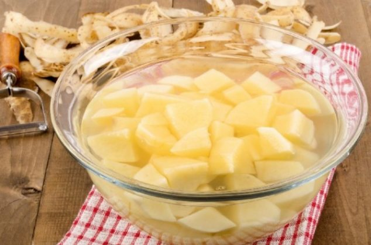

Patatas Fritas

Componentes
-
Patatas (preferiblemente variedades como Russet o Yukon Gold)
- vegetal (como aceite de canola, maíz o girasol)
- (al gusto)
link
Procedimiento:
-
Lava y pela las patatas. Puedes dejar la piel si prefieres patatas fritas con piel.
Corta las patatas en tiras delgadas o en rodajas finas, dependiendo de tu preferencia. Asegúrate de
que
todas las piezas tengan un tamaño similar para que se cocinen de manera uniforme.
-  (opcional):
Algunas personas prefieren remojar las patatas en agua fría durante 30 minutos o más para eliminar
el exceso
de almidón. Luego, sécalas bien con papel de cocina.
el aceite:
En una sartén profunda o una freidora, vierte suficiente aceite para cubrir las patatas. Deja que el
aceite se
caliente a una temperatura de alrededor de 175-180°C (350-360°F). Puedes usar un termómetro para freír o
hacer
una prueba colocando un trozo de patata en el aceite; si burbujea y flota, el aceite está listo.
- Freír las patatas:
Coloca las patatas cortadas en el aceite caliente, ten cuidado de no llenar la sartén en exceso para
que las
patatas tengan espacio para cocinarse de manera uniforme. Es posible que debas freírlas en lotes.
Fríe las patatas durante unos 4-6 minutos, o hasta que estén doradas y crujientes. El tiempo exacto
puede
variar según el grosor de las patatas y la temperatura del aceite. Es importante no sobrecargar la
sartén,
ya que esto puede hacer que las patatas no se cocinen adecuadamente.
Utiliza una cuchara ranurada o una espumadera para retirar las patatas fritas del aceite caliente y
colócalas sobre papel de cocina para eliminar el exceso de grasa.
Espolvorea sal sobre las patatas fritas mientras aún estén calientes.
- Servir:
Sirve las patatas fritas calientes y disfrútalas con tus salsas o condimentos favoritos, como
ketchup,
mayonesa, salsa barbacoa o alioli.